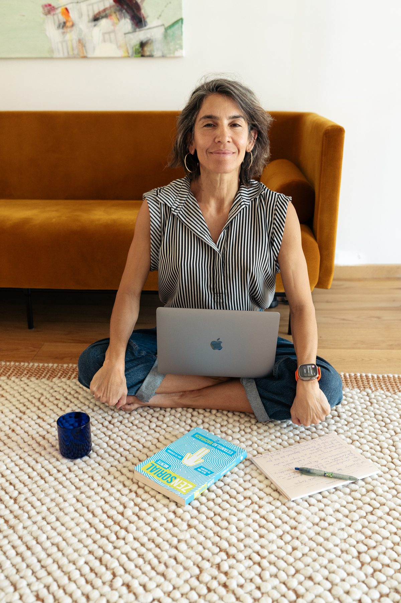

Antes de acompañar a otros,
tuve que aprender a acompañarme a mí.
Coach Integrativa · Máster en Inteligencia Emocional · estudios en neurociencia aplicada al bienestar
Acompaño a personas hispanohablantes en procesos de autoconocimiento, regulación emocional y reconexión cuerpo-mente.

Durante años intenté entenderme desde la mente. Estudié, leí, busqué herramientas; me formé en desarrollo personal, inteligencia emocional y neurociencia. Muchas cosas tenían sentido en mi cabeza: podía analizar lo que me pasaba, ponerle nombre y explicarlo.
Y aun así, cuando mi sistema nervioso se activaba, mi cuerpo volvía siempre al mismo lugar: la respuesta automática que se repetía aunque yo quisiera hacerlo diferente.
Ahí comprendí algo que hoy sostiene todo mi trabajo.
No basta con entender lo que te pasa. Necesitas entrenar una nueva forma de responder.
El conocimiento, por sí solo, no me transformó. La neurociencia me dio un mapa para mirar mi historia desde otro lugar: me ayudó a ver que muchas de nuestras reacciones no son defectos personales, sino respuestas aprendidas por el sistema nervioso.
Comprenderlo fue un punto de partida, no una llegada. Necesitaba llevar ese conocimiento al cuerpo.
Durante mucho tiempo intenté resolver desde la mente algo que también necesitaba ser sentido, respirado, regulado y practicado en el cuerpo.
El proceso empezó a cambiar cuando empecé a hacerlo: con la respiración, la regulación emocional, la conciencia corporal, el movimiento y una mirada más compasiva hacia mí misma.
Y así dejé de luchar contra mi cuerpo, y empecé a escucharlo.
ALMAVIVA nació de esa experiencia: la de descubrir que el cambio no solo se entiende. También se entrena, se practica y se integra.
Es un trabajo de neuroeducación y neuroentrenamiento: aprender a transformar los patrones automáticos en respuestas más conscientes, reguladas y coherentes.
El cambio duradero no se logra con fuerza de voluntad. Se entrena cuando comprendes lo que te pasa y llevas ese conocimiento al cuerpo, con práctica y constancia.
En el fondo, todo ocurre en un mismo lugar: el espacio entre lo que ocurre y cómo respondes.
ALMAVIVA es un espacio de educación, coaching y práctica de bienestar; no sustituye procesos terapéuticos, psicológicos ni médicos.
Entender cómo funcionan tu cerebro y tus emociones.
Reconocer tus patrones y respuestas automáticas.
Definir hacia dónde diriges tu energía.
Entrenar nuevas respuestas con prácticas pequeñas y reales.
Incorporarlas al día a día, hasta que dejan de ser esfuerzo.
Lo que realmente da sentido a este trabajo es haber recorrido primero el camino en mi propio cuerpo. Mi formación integra coaching, inteligencia emocional, neurociencia aplicada, mindfulness, respiración y prácticas cuerpo-mente:
Coaching, inteligencia emocional y neuroeducación
Cuerpo, respiración y prácticas somáticas
Hoy elijo la presencia.
Soy chilena y vivo en Copenhague, Dinamarca, en una etapa en la que escojo el cuerpo, la conciencia y la conexión como forma de vida.
Creo en los pequeños rituales diarios. En la respiración. En el movimiento. En la naturaleza. En el descanso sin culpa. En cocinar, caminar, sentir el sol, compartir con mi hija y volver una y otra vez a lo esencial.
Soy una eterna aprendiz.
La serenidad interna no es una fantasía. Es una posibilidad que se entrena.
Si algo de lo que leíste te resonó, conversemos.